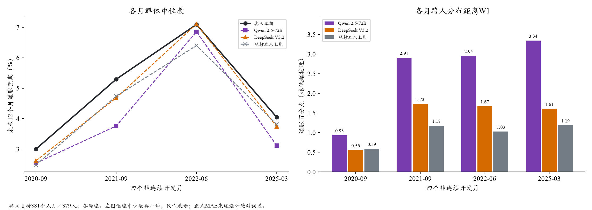
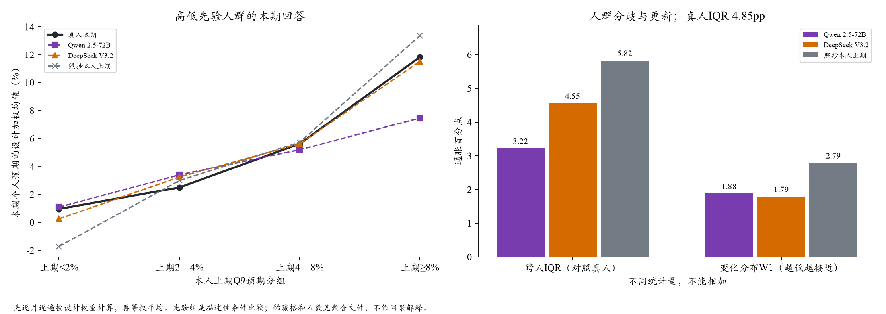

水上挽月 · SCE历史条件重建 · 2026-10-21
DeepSeek V3.2与Qwen：相同输入下的比较
四期各96人、每人两遍。V3.2固定SiliconFlow FP8，Qwen固定DeepInfra FP8；旧Qwen回答复用，人口、环境、真实上期信念与完整提示逐字一致。
本轮V3.2相对Qwen：群体中位数MAE降低，跨人分布W1降低。这是四个开发月的结果；模型与托管实现共同变化，不等于参数规模的单独效果，也不自动证明全国或未来预测改进。
群体中位数MAE · pp0.792 → 0.349照抄本人上期 0.502
跨人分布W1 · pp2.534 → 1.392照抄 0.996；越低越接近
跨人IQR · pp3.217 → 4.553真人 4.845；并非越大越好
1. 比较配置与信息边界
2020-09、2021-09、2022-06、2025-03，分别覆盖疫情、通胀上升、高通胀与近期阶段。保持温度0.5、JSON、关闭思考、最多1024输出token和相同归一化规则。输入包含合成食品采购角色、食品价格背景、8篇新闻、政策和本人真实上期Q8/Q9及更早摘要。仍是回访者A线条件重建，不是新入组或B线自主连续预测。
2. 月度中心与完整分布
共同支持381个人月／379人。V3.2格式合法768份，连续密度统计可计分767份；格式合法不等于每个派生量都可计算。按原有规则排除不可计分个人月，保留原始回答，不补造结果；双方使用相同配对支持。主统计量为每人Q9拟合密度均值，再计算跨人设计加权中位数；按月份和生成遍数等权计算MAE。RMSE：Qwen 0.939、V3.2 0.403、照抄 0.529pp。

两遍生成不计作两倍人数；四个时点不连续，折线不代表中间月份的实际轨迹。
3. 原有信念保留与跨月更新
变化W1：Qwen 1.878、V3.2 1.786、照抄 2.785pp。按本人上期预期分组，可以查看高预期人群是否仍被推向中间；该条件差距不能单独识别模型内部推理。
上期预期≥8%的96个人月，真人本期组均值11.825%，Qwen为7.470%，V3.2为11.514%。低先验<2%的人群，V3.2的组均值反而比Qwen更偏低；改善不是每一项条件偏差都缩小。

不同组跨月的平均仅基于该组实际有支持的格子；人数、ESS和稀疏标记见聚合JSON。
4. Q8及统计边界
Q8单独评价，共同支持384个人月。Q8群体中位数MAE：Qwen 1.500、V3.2 1.275pp；不能与Q9主成绩混用。
个人概率表达也更接近：通缩各档全填0的加权人数占比，Qwen为28.3%，V3.2为49.6%，真人为56.7%。每人内部的概率密度IQR均值为4.25→4.70pp，真人6.37pp；这表示每个人自己的不确定性，与跨人IQR是不同指标。
与Qwen相比，四个月中心MAE、W1都改善；与照抄相比仍不能说稳定胜出。去掉2022-06，V3.2中心MAE为0.433，照抄为0.439pp，优势仅约0.005pp。总体W1和个人MAE仍落后于照抄，变化W1也不是逐月都改善。
V3.2减Qwen的配对95%区间：q9_center_mae_pp：[-0.708, +0.012]；cross_section_w1_pp：[-1.424, -0.513]。按人聚类、固定这四个月的区间不能代表跨月份总体的不确定性。旧Qwen不是同期随机生成的控制，完整训练截止与托管权重未获固定证明。未在这四个月拟合最终组合权重，不能据样本内最优组合宣布预测成功。
5. 两次生成：没有靠增加随机波动来扩大人际差异
同一人两次Q9预期的平均绝对差，Qwen为0.689pp，V3.2为0.633pp；两次生成之间的个人排序Pearson相关为0.905→0.933。这与较稳定地保留个人差异的解释一致；只有两遍，不能当成精确方差分解。种子控制样本/输入，未向服务端传生成seed，不保证逐字复现。
执行与复现
新增768次，接口错误0次；Q9原始合法768/768，等比例归一化0份。新增回包报告费用$0.460105，含此前失败预留的总记账$0.504900／$4。新批调用54.4分钟、最多4并发，无自动重试。早先AtlasCloud的18次尝试单列，其中5份有效回答全部排除于本轮成绩。
聚合结果与分组 · 费用与运行记录 · 完整结果与复算 · 原始合法支持、删月与逐遍结果 · 本轮配置
计分输入：outputs/sce_v32_siliconflow_evaluation_20261021_v1。本页与JSON只有聚合，不发布逐人画像、提示或回答。